World Action Verifier: Self-Improving World Models via Forward-Inverse Asymmetry
1. 论文速览
难度评级：★★★★☆。读懂实验主线不难，但完整理解需要同时掌握 world model、inverse dynamics、active exploration、latent causal identifiability、OLS sample complexity 以及机器人 imagination-based policy learning。
关键词：world model, inverse dynamics, active exploration, verification, self-improvement, action-free video。
| 阅读定位 | 内容 |
|---|---|
| 论文要解决什么 | 通用 world model 不只要覆盖专家动作，还要在 suboptimal、random、exploratory actions 上可靠预测。但 action-labeled robot data 昂贵，现有 uncertainty/progress 等方法在最欠探索的区域反而最难可靠估计世界模型错误。 |
| 作者的方法抓手 | 把 action-conditioned prediction 的验证拆成 state plausibility 与 action reachability：前者用 action-free video 训练的 subgoal generator 检查未来状态是否 plausible，后者用 sparse inverse dynamics model 检查 transition 是否可由动作解释，然后用 reverse cycle discrepancy 选择最值得采集的交互。 |
| 最重要的结果 | 在 MiniGrid、RoboMimic、ManiSkill 共 9 个任务上，WAV 获得约 2 倍 world model sample efficiency，并使 downstream policy performance 平均提升 18%。 |
| 阅读时要注意的点 | WAV 不是直接提高 policy，也不是纯 synthetic self-training；它仍需要环境反馈。核心是利用 verifier 对候选交互排序，优先采集 forward model 最可能失败但 inverse verifier 仍可信的 transition。 |
核心贡献清单
- 提出 World Action Verifier。WAV 用 subgoal generator、sparse IDM 与 forward world model 构成 reverse cycle，用 cycle discrepancy 指示 world model 的潜在错误。
- 提出 forward-inverse asymmetry 的验证视角。论文将 world model verification 分解为 state plausibility 和 action reachability，并指出两种不对称性：action-free data 更丰富、action-relevant features 更低维。
- 给出理论条件与样本复杂度解释。主文和附录分别说明 sparse inverse verifier 在 compositional OOS 下何时可泛化，以及 forward/inverse gap 如何由维度、随机性和样本数决定。
- 跨 synthetic 与 robotics benchmark 验证。MiniGrid 用于可控地分离 sample size、state complexity、stochasticity；RoboMimic/ManiSkill 用于验证机器人 world model quality 与 downstream policy reward。
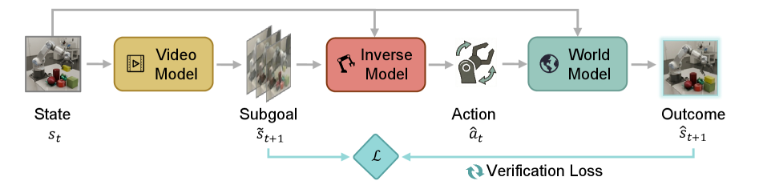
2. 动机与相关工作
2.1 为什么 world model 的验证很难
论文关注的 world model 是 action-conditioned forward dynamics model：给定当前状态和动作，预测未来状态。这类模型可用于 policy evaluation、policy optimization、test-time planning 和 imagined rollouts。但与 imitation learning 主要建模专家动作不同，world model 要覆盖更宽的动作分布，包括随机动作、探索动作和失败动作。问题在于，这类 action-labeled robot interactions 往往慢、贵，真实环境中还可能不安全。
已有 exploration 方法通常使用 on-policy data、information gain、epistemic uncertainty、ensemble disagreement 或 learning progress 来选样。但论文指出一个实践悖论：这些信号在 well-explored regions 更可靠，而真正需要采集的是 under-explored regimes；最有信息量的交互恰恰是先验最少、最难验证的交互。
2.2 论文的关键 insight
作者的 insight 是：不要直接让 world model 自己估计自己的 dense forward error，而是验证一个预测是否满足两个必要条件。第一，预测的未来状态是否是环境中 plausible 的状态转移。第二，这个状态转移是否能由给定动作 reach。前者可以利用大量 action-free video，因为视频不用动作标签也能覆盖丰富的 plausible state evolution；后者可以用 inverse dynamics，而且只需要 action-relevant state subset。
2.3 相关工作脉络
| 方向 | 论文如何定位 | 与 WAV 的关系 |
|---|---|---|
| World Models for Robotics | 从 MBRL 到 latent/pixel world models，核心目标是用预测未来做 planning、policy evaluation 或 control。 | WAV 不替代 world model，而是为 action-conditioned world model 提供 verification-guided data acquisition。 |
| Exploration for World Models | 已有方法用 count、density、uncertainty、disagreement、learning progress 或 curiosity 来找 informative data。 | WAV 的差异是不用 forward model 自身 uncertainty 直接估错，而是组合 video prior 与 sparse inverse reachability。 |
| Inverse Dynamics on Videos | IDM 可作为 policy、regularizer、labeler 或 verifier，从状态变化恢复动作。 | WAV 把 IDM 用作 verifier，并强调 sparse action-relevant subset 的 OOS 泛化优势。 |
| World Action Models | WAMs 通常联合利用 action-free internet video 与 action-labeled robot data 来做 policy learning。 | WAV 形式上像 future-state generation + inverse action prediction，但用途是验证 world model 和指导采样。 |
3. 问题设定与核心方法
3.1 Semi-supervised verification setting
论文首先定义 action-conditioned world model：
world model 做的事情：给定当前状态和动作，预测下一状态。
$$\hat{s}^{t+1}=f_\theta(s^t,a^t)$$| $s^t$ | 当前状态，可以是 grid state、latent state、视觉观测或机器人状态。 |
| $a^t$ | 动作或 action chunk。 |
| $\hat{s}^{t+1}$ | world model 预测的后继状态。 |
数据分为小规模 action-labeled robot interaction dataset 和大规模 action-free video dataset：
目标不是只让 $f_\theta$ 拟合 $\mathcal{D}_{act}$ 的窄动作分布，而是利用 $\mathcal{D}_{vid}$ 的广泛 transition support 来改善欠探索区域的 action following。
如果真实后继状态可得，预测误差是：
理想选样应挑 world model 最容易犯错的交互。
$$\varepsilon(s^t,a^t):=\ell(\hat{s}^{t+1},s^{t+1})=\ell(f_\theta(s^t,a^t),s^{t+1})$$但执行前没有 $s^{t+1}$，所以 verifier $\hat{\varepsilon}$ 至少要保留候选间的相对难度排序：
3.2 两个互补 verification factors
WAV 的分解来自 Bayes rule：
一个正确预测既要像自然未来状态，也要能由该动作造成。
$$p(s^{t+1}\mid s^t,a^t)=\frac{p(a^t\mid s^t,s^{t+1})p(s^{t+1}\mid s^t)}{p(a^t\mid s^t)} \propto p(s^{t+1}\mid s^t)p(a^t\mid s^t,s^{t+1})$$| $p(s^{t+1}\mid s^t)$ | state plausibility：未来状态是否在环境 plausible dynamics manifold 上。 |
| $p(a^t\mid s^t,s^{t+1})$ | action reachability：该 transition 是否可由给定动作解释。 |
state plausibility 通过 action-free video subgoal generator $p_\phi$ 实现：
这些 $\tilde{s}^{t+1}_k$ 是在视频 prior 上 plausible 的候选 subgoals。
action reachability 通过 sparse inverse dynamics model 实现：
IDM 不看完整状态，而只看 mask 选出的 action-relevant features。
$$\hat{a}^{t}=h_\psi(M\odot s^t,\;M\odot s^{t+1})$$| $M$ | learned mask，选择和动作最相关的 state features。 |
| $h_\psi$ | sparse inverse dynamics model。 |
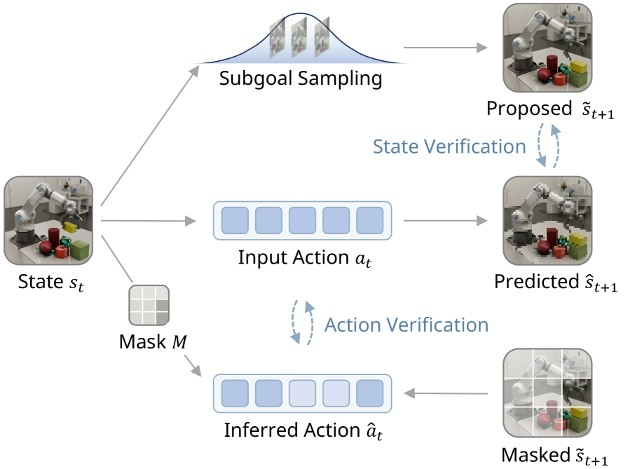
3.3 Reverse self-improving cycle
一个自然但脆弱的方案是 forward-first：先采动作，roll out $f_\theta$，再用 inverse model 检查能否恢复动作。作者认为这在早期很容易失败，因为 $f_\theta$ 的错误会产生 off-manifold rollouts，使 inverse model 也不可靠。
WAV 改用 reverse cycle：
如果 plausible subgoal 与 world model rollout 不一致，说明该 transition 对当前 world model 很难，WAV 选择高 discrepancy 的候选在真实环境中执行并加入数据集。
WAV-Guided Exploration Input: current state s, world model f, subgoal generator v, inverse model h, candidate count K for each exploration iteration: s_g = v.sample(s, K) # plausible subgoals from action-free video prior a = h.inverse(s, s_g) # infer actions reaching those subgoals s_p = f.predict(s, a) # forward rollout under inferred actions scores = dist(s_g, s_p) # cycle disagreement idx = argmax(scores) # most informative candidate s_n = env.step(a[idx]) # collect real feedback D.append((s, a[idx], s_n)) f.update(D), h.update(D)
4. 理论分析
4.1 Distribution-level robustness
理论部分把观测状态写成 latent blocks $\mathbf{z}^t=(\mathbf{z}_1^t,\ldots,\mathbf{z}_k^t)$。mask $M$ 选择一个 action-relevant latent subset $\mathcal{S}$。关键结构条件是 generation-verification gap：完整 pair $(\mathbf{z}^t,a^t)$ 可能 out-of-support，但 restricted pair $(\mathbf{z}_{\mathcal{S}}^t,a^t)$ 仍在 seed data 的 support 上。
OOS novelty 可以发生在全场景层面，但动作在 agent-centric subset 上留下的轨迹仍是熟悉的。
非正式命题：如果存在 identifiable verification subset $\mathcal{S}$，满足 (i) $\mathbf{z}_{\mathcal{S}}^{t+1}$ 只依赖 $(\mathbf{z}_{\mathcal{S}}^t,a^t)$；(ii) full pair OOS 时 restricted pair 仍 on-support；(iii) 动作可由 subset transition 识别，那么 seed data 上训练的 inverse model 可以在 compositional OOS transition 上恢复正确动作。
这保证了 WAV 的 forward-inverse mismatch 主要定位的是 forward-model error，而不是 action-label ambiguity。附录进一步用 time-lagged latent causal model (TLCM) 形式化该结论，要求 latent blocks 可识别、generation-verification gap 成立、动作可从 subset transition 识别。附录 C.1
4.2 Sample-efficiency advantage
第二个理论问题是：为什么 sparse inverse verifier 比 dense forward world model 更容易学。作者分析线性高斯模型：
| $d_s$ | 完整状态维度。 |
| $d_a$ | 动作维度。 |
| $d_z$ | sparse action-relevant slice 维度，假设 $d_z\ll d_s$。 |
| $\sigma_s,\sigma_a$ | 分别表示环境转移随机性与动作恢复不可约歧义。 |
dense forward model 拟合 $[s;a]\in\mathbb{R}^{d_s+d_a}$，sparse inverse model 拟合 $[z;z']\in\mathbb{R}^{2d_z}$。两者都用 $n$ 个 labeled transitions 做 OLS，且把 inverse error 映射回 state space 比较：
主文给出的非正式 gap bound 是：
| 因子 | 含义 | 实验对应 |
|---|---|---|
| Dimensionality | forward model 要估计高维 full state dynamics，sparse inverse 只看 $2d_z$。 | MiniGrid 增加 objects 数量，使有效 $d_s$ 增大。 |
| Stochasticity | forward prediction 受环境噪声 $\sigma_s$ 影响，inverse verification 只受 action recovery ambiguity $\sigma_a$ 影响。 | MiniGrid 加 noisy floor tiles。 |
| Sample size | 当 $n$ 只比 $d_s+d_a$ 大一点时，forward estimator 更不稳定。 | MiniGrid 改变 labeled training data 数量。 |
附录给出 exact OLS excess risk derivation：$\mathbb{E}[\mathcal{E}_F]=\sigma_s^2(d_s+d_a)/(n-(d_s+d_a)-1)$，而 $\mathbb{E}[\mathcal{E}_I]\le \lambda^2(d_a/d_s)\sigma_a^2(2d_z)/(n-2d_z-1)$。附录 C.2
5. 实验与附录设置
5.1 研究问题与 baselines
| 研究问题 | 目标 |
|---|---|
| RQ1 | inverse dynamics 是否比 action-conditioned world model 更容易学、更鲁棒？哪些因素驱动差距？ |
| RQ2 | sparse IDM 是否比 vanilla IDM 更能泛化到 unseen objects 与 novel interactions？ |
| RQ3 | forward-inverse asymmetry 是否能有效自改进 world model？ |
| RQ4 | world model 的自改进是否转化为更好的 downstream policy learning？ |
Baselines 包括 Random、Uncertainty、Progress、Vanilla IDM 和 Oracle。Random 均匀采样，Uncertainty 选预测不确定性最高的候选，Progress 选两轮之间 model loss change 最大的候选，Oracle 用 ground-truth action labels 计算真实 world-model prediction loss 作为上界。
5.2 MiniGrid 设置
MiniGrid 使用 EmptyEnv，包含 key、ball、box 三类对象，每个对象可为 red 或 blue。动作共 7 个：turn left、turn right、move forward、pick up、drop、toggle、swap。toggle 对 key/ball 改变颜色，对 box 执行交换；swap 是作者额外定义的动作，用来交换前方物体与 agent 当前携带物体。
| 任务 | 定义 |
|---|---|
| Key Delivery | 找 key，调成目标 box 颜色，放入 box，再与 ball 交换，调 ball 颜色并到达 goal。 |
| Ball Delivery | Key Delivery 的结构镜像，先处理 ball，再处理 key。 |
| Object Matching | 识别 box reference color，使 key 和 ball 与 box 同色，并放到 box 周围后到达 goal。 |
| Category | Count (Transitions) |
|---|---|
| Total Collected | 66,641 |
| Unlabeled Pre-training Set | 28,000 |
| Exploration Pool | 28,273 |
| Test Set (Action-balanced) | 10,368 |
正文另写到探索池由 action-labeled seed set 200 sequences 与 unlabeled candidate set 20k sequences 组成；附录表则以 transition 计数列出完整池。二者单位不同，读实验时要分清 sequence-level 与 transition-level 描述。
| Action \ Object | red key | blue key | red ball | blue ball |
|---|---|---|---|---|
| Pick up | absent | seen | absent | OOS |
| Drop | OOS | absent | seen | absent |
| Toggle | OOS | seen | seen | OOS |
| Swap (box for ...) | OOS | absent | seen | absent |
MiniGrid 指标包括 Dynamics Accuracy、prediction loss、Spearman rank correlation 与 Kendall rank correlation。Dynamics Accuracy 只在发生时间变化的元素上计算，以避免静态背景让分数虚高。附录 A
5.3 Robotics 设置
机器人实验在 Roboverse 中进行，任务来自 RoboMimic 的 Lift、Can、Square，以及 ManiSkill 的 PullCube、PokeCube、LiftPeg。每个任务使用 wrist-mounted camera、front-facing camera 和 proprioception；动作空间为 7 维连续向量 $[-1,1]$，控制 end-effector position/orientation 变化和 gripper 开合。
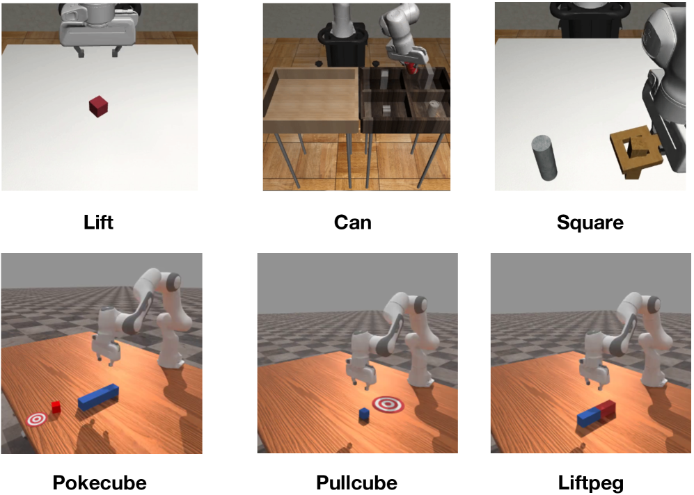
每个任务训练 10 个 diffusion policy checkpoints 来采集多样轨迹，共 1500 samples per task。9 个 checkpoints 构成 exploration dataset，剩下 1 个 checkpoint 作为 validation set。默认 horizon：Lift 100，Can/Square 200，PullCube 50，PokeCube 100，LiftPeg 150。
5.4 模型与超参
| World Model | 设置 |
|---|---|
| Backbone | Dreamer-V3 style action-conditioned latent RSSM。 |
| Observation encoder | Visual observations 用 stride-2 convolutional encoder；proprioceptive states 用 5-layer MLP；image 和 state 分开编码。 |
| Latent state | 包含 deterministic recurrent component $h_t$ 和 stochastic component $s_t$；GRU hidden state 512；stochastic representation dimension 1024；rollout horizon 32。 |
| Training hyperparams | Replay capacity $10^5$，batch size 16，batch length 32，Adam，reconstruction loss scale 1.0，learning rate $10^{-4}$。 |
| Inverse Dynamics / Action Decoder | Value |
|---|---|
| Base architecture | CLAM-style latent inverse dynamics model，ST Transformer encoders for visual observations。 |
| Sparsity | 对 inferred latent actions $z_t$ 加 $\ell_1$ regularization；sparsity loss weight 0.1。 |
| Num updates | 500,000 |
| Action decoder | 每 2 步训练一次；batch size 128；loss weight 1；hidden dim [1024,1024,1024]；embedding dim 512。 |
| Latent action dim / context | latent action dim 16；context len 2；embedding dim 128。 |
6. 结果解读
6.1 MiniGrid：验证理论三因子
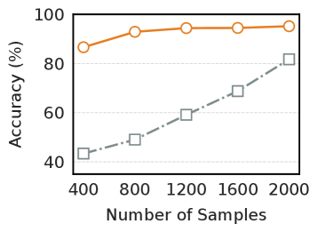
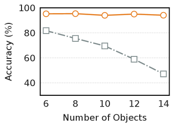
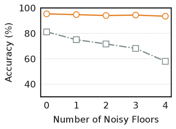
Figure 3 对应理论 bound 的三个项。样本效率图显示，在不同 labeled data regimes 下，IDM-induced transition accuracy 高于 action-conditioned WM，低数据时差距最明显。复杂度图通过把 objects 从 6 增到 14，提高有效 $d_s$，WM 明显退化而 IDM 稳定。噪声图通过 noisy floor tiles 增大 $\sigma_s$，WM 对噪声敏感，而 IDM 基本不变。
6.2 MiniGrid：Sparse IDM 与 acquisition
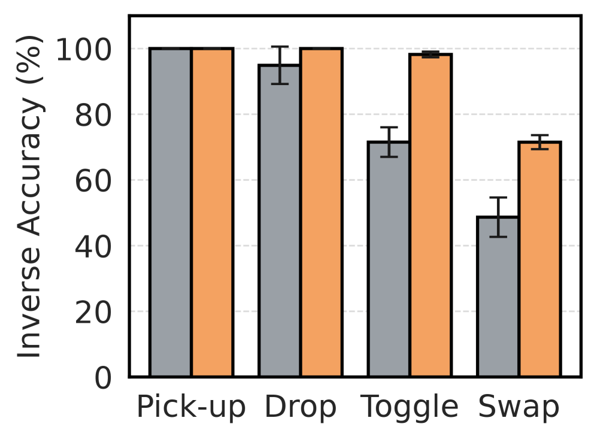
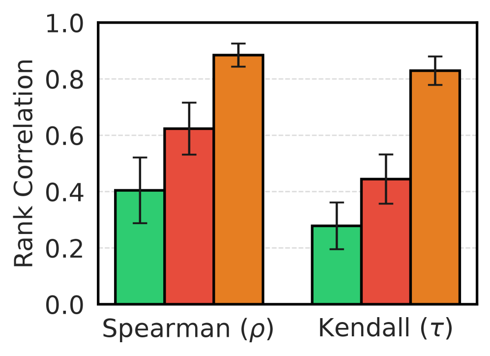
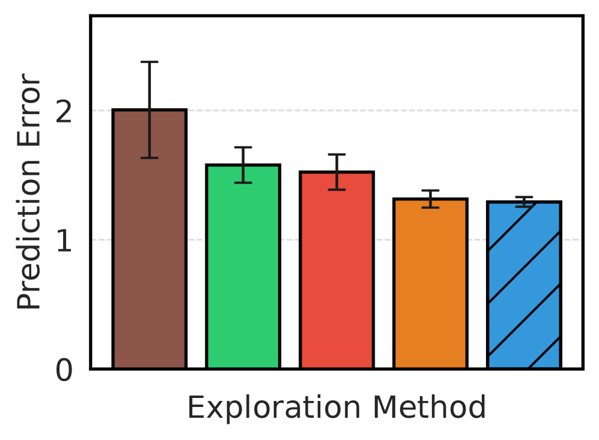
RQ2 的重点是 Vanilla IDM 在 limited data 下对 interaction actions 泛化失败，而 Sparse IDM 维持更强表现，说明 full observation 中的 spurious correlations 会损害 OOS 泛化。RQ3 的 active learning 图显示，在初始 200 条 labeled transitions 后，每轮采 100 条，WAV 选择的样本更能降低 world model prediction error。作者解释 Random 不够频繁采到 sparse interaction events，Progress 容易冗余地采已经会的区域，Uncertainty warm-up 慢。
6.3 Robotics：ranking、world model quality 与 policy reward
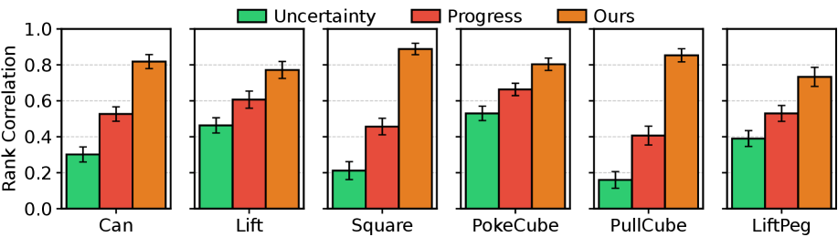
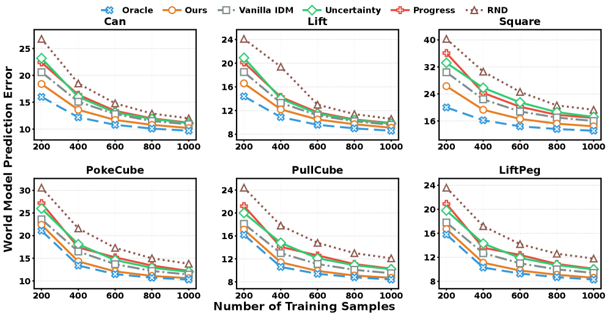
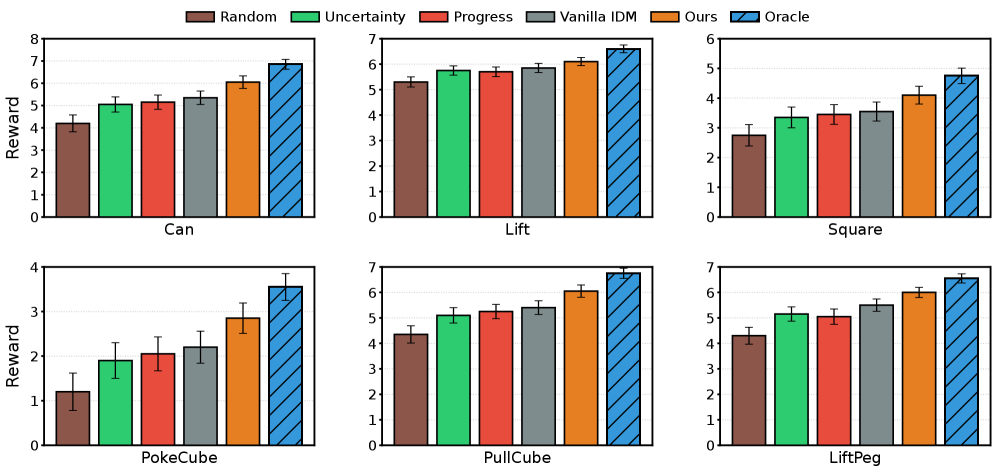
机器人实验验证 RQ4：更准确的 world model 是否能转化为更好 policy。作者沿用 SAILOR protocol，用 learned reward model 在 imagined latent trajectories 上做 online search / policy refinement。结果显示 Can、Square、PokeCube 等接触复杂或歧义更高的任务差距更明显；Lift 动态简单，各方法差距较小。
6.4 附录可视化
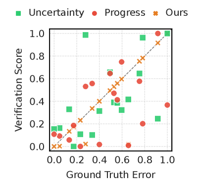
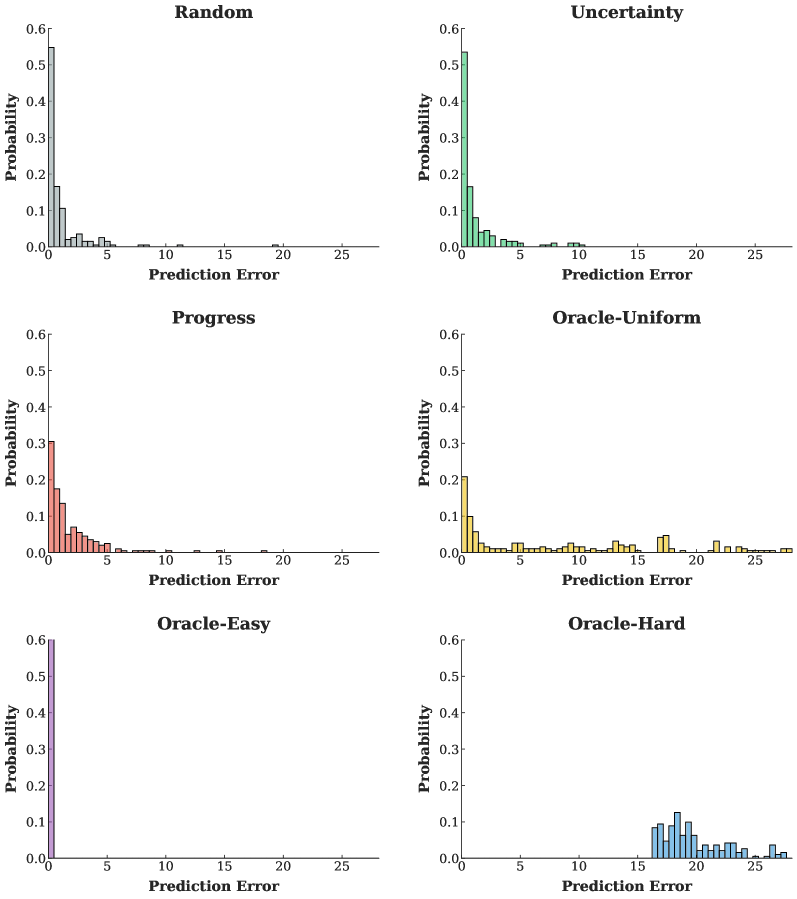
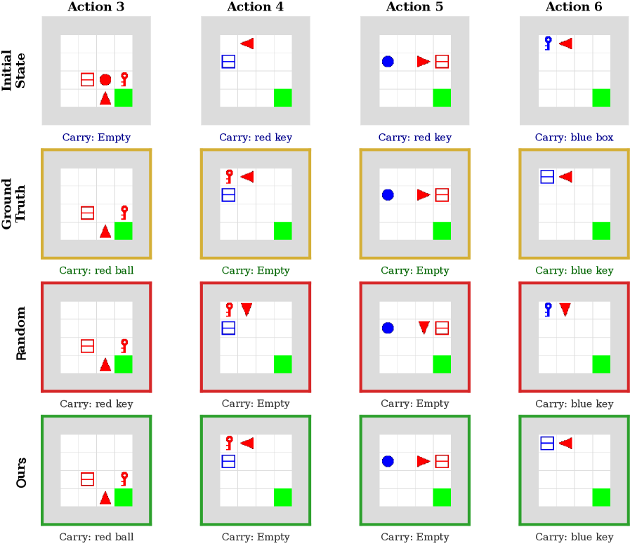
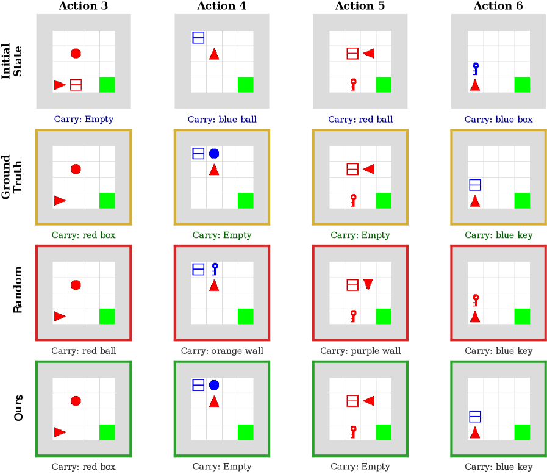
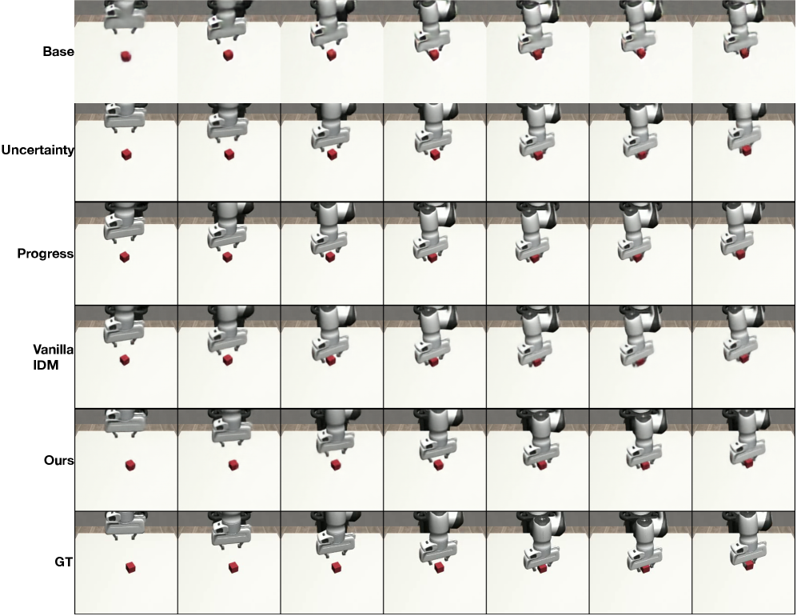
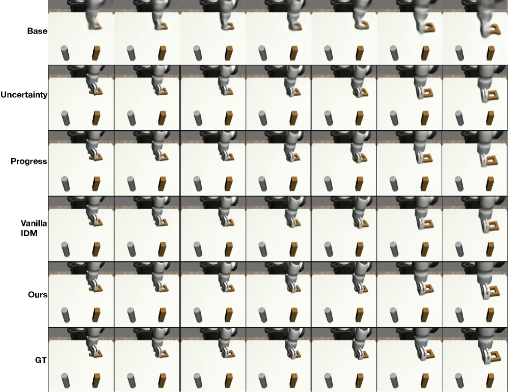
7. 分析、局限与边界
7.1 这篇论文最有价值的地方
从论文自身论证看，最有价值的地方是把 world model exploration 中“如何在欠探索区域可靠估错”这个难点，转化为一个更容易验证的 forward-inverse consistency 问题。它不是只提出一个新 acquisition score，而是给出一套结构性解释：action-free video 提供 broader plausible state support，sparse inverse dynamics 提供 low-dimensional action reachability check，二者合起来让 world model 能在自己不可靠的区域得到外部锚点。
7.2 结果为什么站得住
论文的证据链比较完整。MiniGrid 先用受控变量分别验证样本数、状态复杂度和随机性三类理论因子，再用 OOS action-object-color compositions 验证 Sparse IDM 相对 Vanilla IDM 的优势；随后用 Spearman/Kendall correlation 对齐 Oracle ranking，而不是只看最终 loss。机器人部分继续检验 ranking robustness、world model prediction MSE 和 downstream policy reward，说明 verifier 的优势不仅停留在合成环境中，也能影响实际 manipulation 的 imagined planning quality。
7.3 作者自述的局限
第一，当前 WAV 需要三次 inference pass：subgoal generator、inverse model 和 forward world model。因此相比传统 exploration methods 计算更贵。作者明确提出未来可通过 shared intermediate representations 或 adaptive computation 降低开销。
第二，WAV 仍依赖额外 environment feedback 来纠正 action-conditioned prediction errors。作者在 conclusion 中对比语言模型可从纯合成 reasoning data 自改进的情况，指出完全 self-improving world models 在复杂 embodied settings 中仍未实现，可能需要更强 verifier、更强 generative priors 和更 expressive inverse models。
第三，理论条件有适用边界。附录说明 WAV 最适合 verifying subset 小且固定维、OOS novelty 集中在非验证变量、动作 imprint 强且可识别的场景；在 action aliasing、underactuation、latency 或 OOS dynamics 反过来影响 proprioceptive verifier 时，pseudo-label 可能漂移甚至失败。附录 C.1
7.4 适用边界
- 适合：高维视觉状态、有限 action labels、大量 action-free trajectories、动作可由低维 agent-centric features 识别的 manipulation 或 embodied tasks。
- 不适合：动作对可观测 subset 的影响不可区分，或环境接触反馈强烈改变 verifier subset 的任务。
- 实验边界：机器人部分是模拟任务而非真实机器人部署；真实环境安全与实时性仍需额外验证。
- 资源边界：虽然采集样本更省，但系统需要维护三个模型组件，并执行多次推理与更新。
8. 复现审计
代码与项目页
项目页可定位：论文给出 world-action-verifier.github.io。arXiv 源码没有在正文中列出 GitHub URL；复现需以项目页后续发布为准。
MiniGrid
设置较完整：附录给出任务定义、动作集合、对象/颜色组合 OOS split、数据量、metrics、world model 与 IDM 结构描述。需要自行实现 swap action、toggle semantics 和 action-balanced test set 构造。
Robotics
可复现但依赖较多：需要 Roboverse、RoboMimic、ManiSkill、Dreamer-V3 world model、CLAM-style IDM、diffusion policy checkpoints 采样以及 SAILOR reward model/policy refinement setup。
关键超参
World model: replay capacity $10^5$，batch size 16，batch length 32，Adam，LR $10^{-4}$，rollout horizon 32。IDM/action decoder: 500k updates，latent action dim 16，sparsity loss weight 0.1，action decoder batch size 128。
最小复现实验建议
先复现 MiniGrid 的三组 controlled tests：labeled data 数量、objects 数量、noisy floors 数量。它们直接对应理论 bound 的三个因子，是验证 WAV 核心假设的最低成本路径。